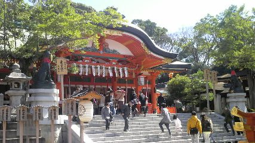
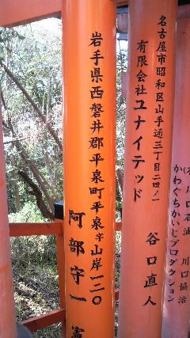
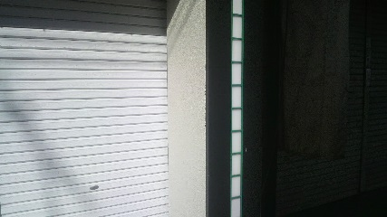
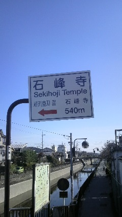
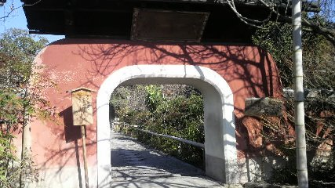
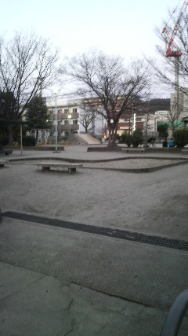

京都・伏見
2013/03/11 - 2日目 伏見
5時起床
うん、生活リズム整えて行ったかいがあった。
2日目は伏見稲荷大社参拝が主な目的。
日程的にはかなりゆるゆるな行程を組んでました。
あたりが明るくなるまで昨日のアニメ鑑賞会の続きを少々したあと、友人と一緒に朝飯へ。
松○はどこいっても同じで安心するね（良くも悪くも）
そしてこの時点で友人とは別れ、東京駅から東海道新幹線で京都へ。
東京駅行くまでの列車が通勤ラッシュに合わさってしまってヒーコラヒーコラいいながら行きました。
都会のパワーってスゲー
東海道新幹線利用は今回が初めて（遠い昔にはあったかもしれないけど知らん）
いつも帰省や東京行きに利用する東北新幹線と違ってちょっと質素な作り(?)でした。
ちゃんと車掌さんが券の確認に来るんですね。
ちょっと厳ついアメリカンなお客さんにも英語で対応する車掌さんｶｯｺｲｲ
で、
京都駅から奈良線で南下して
東京駅、京都駅は忙しくて写真撮ってる暇なかったのでせめて(^^;
つきました。
駅からもう朱色の鳥居があってまるわかりでした（←撮り忘れ）
稲荷駅の改札を出るとすぐ目の前に伏見稲荷大社が
この写真でいう右下の視界では地盤の工事しててうるさかった;
一番始めのでっかい鳥居
壮大
でっかい鳥居をくぐり、楼門へ。ここにも鳥居が
楼門をくぐると神楽殿がありました
巫女さんが舞を踊ると絵になりそうだ。←
そして本殿

狛犬ならぬ狛狐が両脇にひかえる中、お賽銭を投入して適当にお参り。
写真左下の寄贈の札のところに天皇皇后両陛下のお名前を拝見。
順路に従い授与所へ。
ここではおみくじを引きました。
結果、「凶のち吉」 書いてることは・・・うんまあ当てはまるものでしたよ。
最近やる気がなかったりいろいろ運気がないのは実感できてましたからねー
ま、きれいな巫女さんからおみくじもらえたからいいや←
授与所を後にして奥宮へ。この辺からさらに鳥居が増えてきます。
いまさらながら伏見神社についてもらった資料から適当に抜粋。
---
伏見稲荷大社は全国3万社を超える稲荷社の総本宮。
五穀豊穣・商売繁盛・家内安全と多方面に様々な御利益があり守護神として広く信仰されている。
シンボルは狐（霊狐）、我々の願いを稲荷大神に伝えてくれると信じられている。
鳥居の朱色を始めとして、古代から朱色は魔力に対抗し生命力を象徴とする色として、
稲荷大社境内の多くの社殿や鳥居に用いられている。
境内いたるところにある鳥居には「願いが通る・通った」という意味が込められており、
祈願と感謝の証として全国から今でも奉納されている。
---
奥宮
例祭日に行くと何かやってるのかしら・・・？
本殿よりこじんまりしてましたがいい雰囲気。
奥宮を通り越していよいよ千本鳥居へ
駒狐さんがお出迎え
ｺｰﾝ
途中から二股に分かれてました。まあすぐ合流するんですが。
壮大

「丁」ってどれくらいだ・・・？
人がいない時を見計らって
振り向くとこんな感じ、全国から奉納されてます
千本鳥居を抜けた後には奥社が
ここには「おもかる石」があります。
願いを思ってから石を持ち上げ、そのとき予想した重さより軽いか重いかでその願いの成就率をみるものだそうです。
奥社にきつねの形をした願掛け絵馬がありました、てめえらネタに走ってんじゃねえよw
さて、ここらへんから本格的に登山開始。
鳥居をくぐりつつ山頂を目指します。
鳥居の中に鳥居がいっぱい・・・
三ツ辻を超えてとりあえず中継ポイントの四ツ辻を目指すことに。
ルートと行っても迷う心配はほとんど無く、鳥居のある方へ従っていけばいいのであとは体力・脚力の心配だけでした。
途中山道では古き良き町並みが
階段続きでしたが途中道ばたで休憩しつつゆっくりと登る。
なーに、焦る必要はどこにもないさ。
参道が大変なのは信仰の大切さを思い返しながらゆくため。
そして・・・
四ツ辻到着
景色が一望できる
四ツ辻でカ□リーメイトを食し、休憩。
ここまでは人がそこそこいます。
あとは山頂コースとここで折り返し下山して本殿へ戻るコースがあるので、この先は人が少なくなります。
山頂へのアタックコースは四ツ辻を支点としてループしてるので四ツ辻→山頂→四ツ辻と戻ってくることになります。
俺は山頂コースを時計回りで回ることに。
・
・
・・・
ずいぶんダイナミックだなお前さん・・・
ところどころに廃屋まがいの古い家々があったけど商売やってるのだろうか。
店先に売り物はあるが人の気配がしない・・・
代わりに山の自然の気配がそこかしこに。鳥の鳴き声エトセトラ。
山の中腹らへん？から
お墓みたいなのも結構奉納されてます。
まさに霊山
途中、御劔社という刃物の神様が祀られている社がありまして、技術発展の神だそうなのでお参りしてきました。
ノミとか包丁とかそういう技術なんでしょうから情報分野の発展を祈願してもちょっと違うのかもしれませんが・・・
・
・
・
そして、頂上の一ノ峰に到着。疲れました
一ノ峰には鶴亀大社もありました
ここからは下山。
登りより下りの方が筋肉使うのでゆっくりと。
鳥居の裏を見ながら行くことになるので字がいっぱい。
二ノ峰到着。一ノ峰と似通った景色で一瞬「戻ってきたか？！」と思ったけどそんなことなかった。
とりあえずループ支点の四ツ辻を目指しながら階段を降り下り。
文字があるとつい読んでしまうので足下が注意散漫になりがち。
また遠いところから奉納されてますな・・・
自分の出身地からの奉納鳥居を探すのは誰もがやること。

(写真の名前や企業様とは何の関係もございません)
現在住んでる県も発見。
土地柄からか京都・大阪などの関西圏からが多かったです。そりゃそうか。
あと愛媛とかも多かったな、何か縁があるのだろうか
・
・
・
そして再び四ツ辻へ戻ってきました。
性懲りもなく景色を撮る。ちなみに自分は母に似て人工物では感動しません。
来た道を戻り、まばらに人とすれ違いながら三ツ辻へ。
ここからは来た道とは別ルートで本殿を目指します。
隠れ桜(?)きれいだったのでカシャリ
だいぶ下りてきました。
とここで厨二心くすぐられる神様が
丸い玉に龍が巻き付いているアレ
本殿すぐそば
この鳥居・・・割れてる？！
あれ？住宅街に迷いこんだかと思ったけど梅発見
不安になりつつも道なりに下りる。
而して道は合っていたようで無事本殿到着。
別アングルで神楽殿をカシャリ
そういえば楼門も間近で撮ってなかったねってことで
あたりの屋台を見ながら伏見稲荷大社を後にする。
オフシーズンだったからかめぼしいものは発見できず。
まあね。
伏見稲荷大社の山登りはゆっくり休み休み行ったからか全行程で3時間ほどかかりました。
普通の人なら2時間、スポーツマンなら1時間半でまわれるそうです。
（自分は）貧弱！貧弱ぅ！
京阪本線の伏見稲荷駅方面へ徒歩ちょっと。
事前に少し調べていた食事処「祢ざめや」で雀を食しに。
(あ、店の外観撮るの忘れた。十字路の角にあったから撮りにくかった)
んでせっかく京都きてるので。
ねざめやセット \1500
きつねうどんとうな重。うまうま。
それと目当ての雀ですがなんとオフシーズンで食べれぬえとのこと。
11月〜1月ごろに雀猟解禁(?)で3月の今だと在庫はもうないとのこと。残念。
でも鶉（うずら）ならあるとのとこでそちらをいただくことに。
鶉（うずら） \700
小さいながらもしっかり鳥肉してました。
自分は酒飲まないけどつまみにいいんじゃないですかねコレ。
お店の雰囲気もいいし、聞き慣れないからか「おおきに」がすごく情緒があった。
かなり日常的に使ってるんですね。
引き続き伏見稲荷駅方面へ。
事前に調べていた情報では「おせんの里」のきつねせんべい、「都麗美庵（トレビアン）」のアンパンがおいしいとのこと。
立地もお隣同士なのでぜひ立ち寄ろうとしたところ・・・

うわぁ・・・
定休日＼(^o^)／
事前によく調べてないからこうなる。ぐぬぬ。
気を取り直していよいよ伏見稲荷駅から京阪本線で南下して墨染駅へ。
↓
すみぞめ、なのか ぼくせん、なのか 駅はすみぞめえきなようですが・・・
せまい道を結構な車が通っていたので生活幹線道路なのかと思いつつおめあての墨染時へ。
ここはたぶん ぼくせんじ で合ってると思う
小さな敷地内の奥にひっそりとありました、墨染桜
３代目なのか・・・
時期的に満開はまだ先のようでした。１分咲きくらい？
んで、せっかくこっち方面に来たので周辺マップで付近の神社仏閣をみると近くにこんなお寺が。
ぜったい漢字だけ見せられても読めない
正門が閉じていたので裏から侵入（よかったのか？！）
欣浄寺の由来はこちら。
そしてこんな中島があって
ありました。小野小町の塚

これがほんとの小野塚小町
あと敷地内で咲いてたきれいな梅おいておきますね
さて、こんどは京阪本線を北上して今夜の宿の最寄り駅である深草駅へ
時間に余裕がありすぎたのでちょっと遠いですがここを目指すことに

片道だいたい7分くらいか・・・（成人女性の平均歩行速度は分速80m）
てってこてってこ歩きながら住宅街の様子を見回す。
いろいろつっこみどころ満載な・・・
「こむらがえり」じゃないのか・・・？
お金の相談はダメなのか・・・
歩行者専用道路
んで、石峰寺到着。

この門、高さが俺の身長ぎりぎりでした。ぴったり
さくーっと見て再び深草駅方面へ
帰り道にて
公園で遊ぶ小学生の文化 良きかな
元気やのぉ。（伏見神社登山であるきっぱなしで）おじいちゃん疲れたよ・・・
・
・
・
そろそろ日も暮れかけてきたので事前に予約しておいたビジネスホテルへ
ずいぶん厳つい通りの名前だな・・・
先に夕食食べてから行こうかと思い付近のラーメン屋へ
途中、龍谷(りゅうこく)大学というかっこいい名前の大学があったのでトイレ借りるついでに探索。
ドラゴンバレーカレッジ
きれいやのー
んで、夕飯はラーメン屋「第一旭」にて
旭ラーメン \700
薄めの醤油味、麺はストレート気味でおいしい。
これも関西ラーメンの特色かな？
メニューみるとここは学割もやってたようです。しまった、学生証見せれば安くなったかもしれなかった。
大学そばのお店ですからねー。
ホテルそばにいい感じの公園発見。
ちょっと時間つぶしに休憩しながら子供達が遊んでいるのを見る。
最近は公園の遊具が減ったりしてるけどここはそうでもなく、子供達も遊んでいる。
良きかな良きかな。

そしてホテル到着アンドチェックイン
今日の疲れをだいぶ癒して明日に臨む。
テレビなんてひさびさに見たなあ
おやすみなさーい
3日目 京都編へ続く